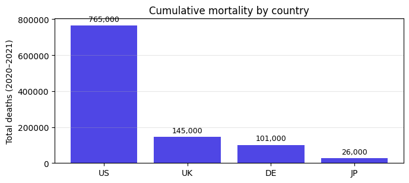
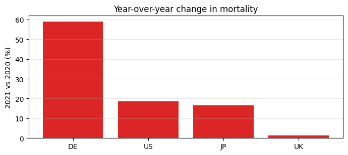

analysis
notebooks/analysis.py
Mortality trend analysis
A paper-shaped jellycell project: compute goes here, narrative lives in
manuscripts/paper.md, figures are saved under artifacts/ and linked
from both the paper and the auto-generated tearsheet.
import csv from pathlib import Path with Path("data/sample.csv").open() as f: rows = list(csv.DictReader(f)) for row in rows: row["deaths"] = int(row["deaths"]) row["year"] = int(row["year"]) print(f"loaded {len(rows)} rows across {len({r['country'] for r in rows})} countries")
loaded 8 rows across 4 countries
raw
ok
5 ms
totals: dict[str, int] = {} for row in rows: totals[row["country"]] = totals.get(row["country"], 0) + row["deaths"] ranked = sorted(totals.items(), key=lambda kv: -kv[1]) for country, total in ranked: print(f"{country}: {total:,}")
US: 765,000 UK: 145,000 DE: 101,000 JP: 26,000
raw
ok
5 ms
# Year-over-year percent change per country, where both years are present. by_country_year: dict[str, dict[int, int]] = {} for row in rows: by_country_year.setdefault(row["country"], {})[row["year"]] = row["deaths"] yoy: dict[str, float] = {} for country, years in by_country_year.items(): if 2020 in years and 2021 in years and years[2020] > 0: yoy[country] = (years[2021] - years[2020]) / years[2020] for country, pct in sorted(yoy.items(), key=lambda kv: -kv[1]): print(f"{country}: {pct:+.1%}")
DE: +59.0% US: +18.6% JP: +16.7% UK: +1.4%
per_country_totals
ok
318 ms
import matplotlib.pyplot as plt import jellycell.api as jc countries = [c for c, _ in ranked] values = [t for _, t in ranked] fig, ax = plt.subplots(figsize=(7, 3.2)) bars = ax.bar(countries, values, color="#4f46e5") ax.set_ylabel("Total deaths (2020–2021)") ax.set_title("Cumulative mortality by country") ax.grid(alpha=0.3, axis="y") ax.bar_label(bars, fmt="{:,.0f}", padding=3, fontsize=9) fig.tight_layout() jc.figure( path="artifacts/country_totals.png", fig=fig, caption="Figure 1: cumulative mortality by country, 2020–2021", notes=( "Bars sum deaths across both years. US dominates at ~74% of the " "four-country total; JP has the smallest absolute burden." ), tags=["result", "figure"], )
PosixPath('/Users/blaise/Desktop/blaise-oss/jellycell/examples/paper/artifacts/country_totals.png')
<Figure size 700x320 with 1 Axes>

artifacts
country_totals.png
16.8 KB
{kind=link}
yoy_change
ok
56 ms
order = sorted(yoy.items(), key=lambda kv: -kv[1]) labels = [c for c, _ in order] pcts = [v * 100 for _, v in order] colors = ["#dc2626" if p > 0 else "#0891b2" for p in pcts] fig, ax = plt.subplots(figsize=(7, 3.2)) ax.bar(labels, pcts, color=colors) ax.axhline(0, color="#6b7280", linewidth=0.8) ax.set_ylabel("2021 vs 2020 (%)") ax.set_title("Year-over-year change in mortality") ax.grid(alpha=0.3, axis="y") fig.tight_layout() jc.figure( path="artifacts/yoy_change.png", fig=fig, caption="Figure 2: year-over-year change (2021 vs 2020), percent", notes=( "Red bars = increase vs 2020, blue = decrease. DE stands out with " "a ~59% rise; UK is nearly flat." ), tags=["result", "figure"], )
PosixPath('/Users/blaise/Desktop/blaise-oss/jellycell/examples/paper/artifacts/yoy_change.png')
<Figure size 700x320 with 1 Axes>

artifacts
yoy_change.png
12.9 KB
{kind=link}
per_country_totals yoy_change
ok
7 ms
summary = { "countries": len(totals), "years_covered": sorted({r["year"] for r in rows}), "top_country": ranked[0][0], "top_country_total": ranked[0][1], "combined_total": sum(totals.values()), "largest_yoy_increase_country": max(yoy, key=yoy.get), "largest_yoy_increase_pct": round(max(yoy.values()), 4), } jc.save( summary, "artifacts/summary.json", caption="Table 1: headline mortality stats", notes="One-number-per-concept digest; fits in the tearsheet as a 2-col table.", tags=["result", "table"], ) jc.save( totals, "artifacts/totals.json", caption="Table 2: per-country mortality totals (2020–2021)", tags=["result", "table"], ) print(summary)
{'countries': 4, 'years_covered': [2020, 2021], 'top_country': 'US', 'top_country_total': 765000, 'combined_total': 1037000, 'largest_yoy_increase_country': 'DE', 'largest_yoy_increase_pct': 0.5897}